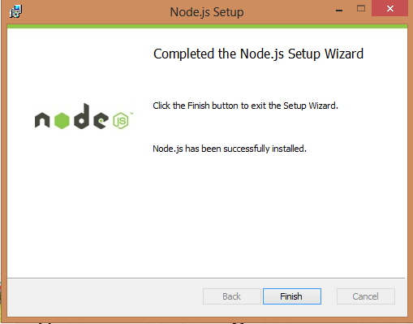
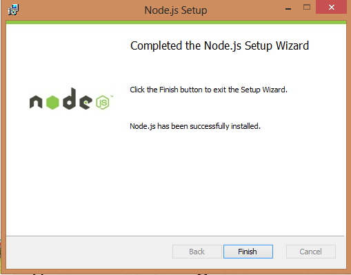

Что такое Node.js?
Node.js (или просто Node) — это серверная платформа для работы с JavaScript через движок V8. JavaScript выполняет действие на стороне клиента, а Node — на сервере. С помощью Node можно писать полноценные приложения. Node умеет работать с внешними библиотеками, вызывать команды из кода на JavaScript и выполнять роль веб-сервера.
В чём преимущество Node.js?
C Node проще масштабироваться. При одновременном подключении к серверу тысяч пользователей Node работает асинхронно, то есть ставит приоритеты и распределяет ресурсы грамотнее. Java же, например, выделяет на каждое подключение отдельный поток.
Зачем он нужен Node.js?
Node.js — не отдельный язык программирования, а платформа для использования JavaScript на стороне сервера. Если говорить о языке, то как для фронденда, так и для бэкенда используется один и тот же JavaScript. Разница только в наборе API, которые используют фронтендеры и бэкендеры.
Браузерный JavaScript использует Web API, которые обеспечивают доступ к DOM и пользовательскому интерфейсу страниц и веб-приложений. Серверный JavaScript использует API, обеспечивающие доступ к файловой системе приложений, http-запросам, потокам.
То есть Node.js — это технология для использования JS на бэкенде
Как установить Node.js?
Установка
На официальном сайте есть инсталляторы для Windows и Mac OS, так же есть бинарники для Linux пользователей.
Для того чтобы начать зайдите на страницу загрузки Node.js. Выберите установщик который
вы хотите скачать и установить.Вам следует использовать пакет исходя от вашей конфигурации.
страницa загрузки Node.js
После загрузки файла, кликаем по нему и запускаем мастер установки.

Проходим по шагам и ждем пока мастер завершит установку.
 

Вот и все. Рекомендуется оставлять стандартные настройки во время инсталляции.